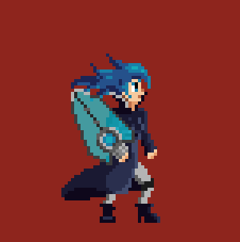
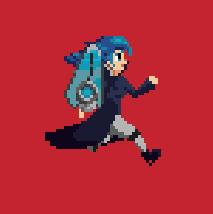
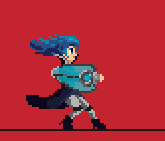
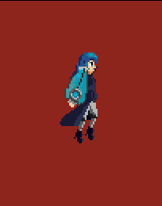
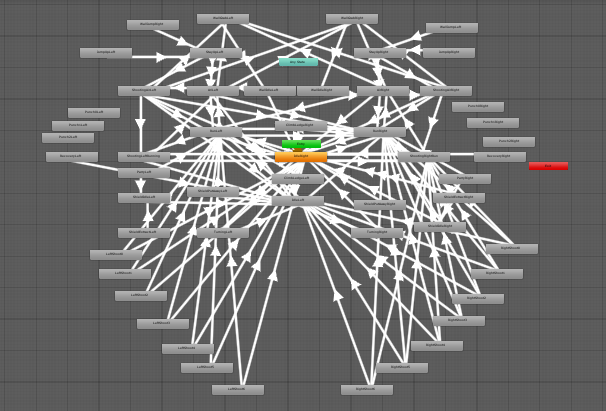

Give me life
During the past two weeks I spent quite a lot of time making animations for my main character; I started with the
basic actions, like idle, running, jumping and shooting. This is how they look like at the moment.
I think the best thing about Mecanim is that it allows the user to set a transition time between two animations, in order to make the change look smoother. The problem is that, since pixel art is hand-drawn frame by frame, it is impossible to automatically interpolate between animations (you would have to draw transitions for EVERY case, which is impossible): one of the main features of Mecanim is quite useless in my case. Plus, last time I tried making a relatively big project, my animation tree looked like this:
The PlayerAnimationManager, then, depending on the value of the flags, plays the right animation. In the following snippet you can see that, if the player is not moving and it is grounded, the animator will play the idle animation.
I would also like to say that I had to use a special flag (forcedAnimation) used to force the execution of an animation,
even though other conditions could be met so that a different animation could be playing at the same time.
Take as an example the landing animation: it must be played as soon as the player touches the ground after a jump, but, actually, depending on the speed of the player, the run or the idle animation should be played. Since the entire animation process is wrapped around an if which checks the forcedAnimation flag, I use a special Play method which sets forcedAnimation to true (preventing other animations from playing), waits for the end of the animation and then resets forcedAnimation to false.

For example, if I had an enemy which has only two animations (e.g. a left idle and a right idle), Mecanim would have been a better solution, because it is a bit more straightforward (plus I don't want to create an AnimationManager for every animated object in my game!).
That's all for today, I hope that you learnt something new and that you enjoyed the reading! You can find a TL;DR after this paragraph. Have a nice day, see you in the next log :)
20/05/2019

The idle animation...

...run animation (this took the most!)...

...shooting idle animation...

Of course I also drew the same animations for Alice facing left. I had enough animations to start putting
them together in Unity :)
...and, finally, jump animaton!
Mecanim
Unity has a very nice, built-in, animation system called Mecanim: it is perfect for 3D games and in many 2D cases, but I found out that it may not be the best choice, if you're animating pixel art like me.I think the best thing about Mecanim is that it allows the user to set a transition time between two animations, in order to make the change look smoother. The problem is that, since pixel art is hand-drawn frame by frame, it is impossible to automatically interpolate between animations (you would have to draw transitions for EVERY case, which is impossible): one of the main features of Mecanim is quite useless in my case. Plus, last time I tried making a relatively big project, my animation tree looked like this:

I must also specify that I did not use blend trees or layers, so maybe it could have looked a bit better.
Basically a huge mess
So what's the alternative?
I created a script called "PlayerAnimationManager", which is in charge of managing animations. It contains some flags (for example, facesRight, isGrounded, isShooting, speed) which store data about what the player is currently doing; these flags are updated in the PlayerController script once a frame in a specific function (UpdateAnimator).The PlayerAnimationManager, then, depending on the value of the flags, plays the right animation. In the following snippet you can see that, if the player is not moving and it is grounded, the animator will play the idle animation.
And it's pretty much the same with the other animations: if certain conditions are met, play a certain animation
Take as an example the landing animation: it must be played as soon as the player touches the ground after a jump, but, actually, depending on the speed of the player, the run or the idle animation should be played. Since the entire animation process is wrapped around an if which checks the forcedAnimation flag, I use a special Play method which sets forcedAnimation to true (preventing other animations from playing), waits for the end of the animation and then resets forcedAnimation to false.
The Play method is a coroutine, so it easily lets me handle wait times
Conclusions
I find this method pretty comfortable for me, and I think it is also good for scalability, if you are provided with a solid base. I also think that it is really suitable for objects with lots of animations on which you need to have an absolute control (in this case my main character), but it may not be the best choice if you have just a few animations.For example, if I had an enemy which has only two animations (e.g. a left idle and a right idle), Mecanim would have been a better solution, because it is a bit more straightforward (plus I don't want to create an AnimationManager for every animated object in my game!).
That's all for today, I hope that you learnt something new and that you enjoyed the reading! You can find a TL;DR after this paragraph. Have a nice day, see you in the next log :)
20/05/2019
TL;DR
- Unity's built-in animation system (Mecanim) may not be the best choice for pixel-art
- Instead, try to create your own animation manager for complex animated objects, so that you can easily add new animations and modify transitions
- Wrap the AnimationManager Update loop in an if which checks the status of a variable, which is set to true if you want to force a certain animation to play, and to false as soon as that animation finished playing
- Use Mecanim to animate pixel art animations with a few animations (simple enemies, background elements), build your own controller if you want to animate more complex stuff (in my case, the main character)